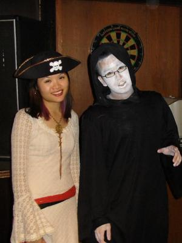
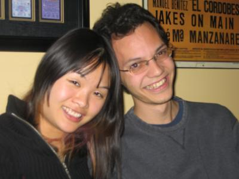
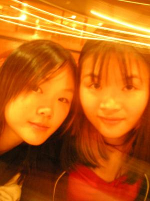
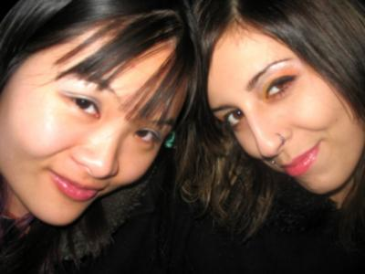
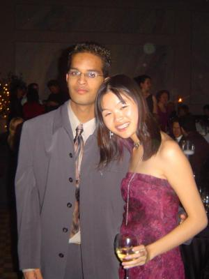
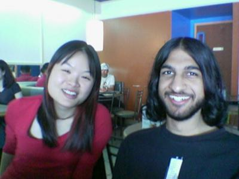

People, in alphabetical order.
|  |
Desmond Desmond on the surface is a really goofy guy, but it's clear he's a fun-loving caring dude. He inspires me to be offensive. Photograph taken in Waterloo, Halloween 2005. |
|  |
Ian Ian and I are old, old friends. Though we run in different circles and don't see each other often, we both know the other one's there. Photograph taken at Markham restaurant, Fall 2005. |
|  |
Jennifer My pretty teenage sister. Photograph taken at Toronto restaurant, November 2005. |
|  |
Missy Missy is one of the very few lovely girls who are secure enough to be a wonderful, encouraging friend. She inspires me to be smarter. Photograph taken in Waterloo, December 2005. |
|  |
Nilesh Nilesh is a sweetheart who worked with me at RIM. He made me laugh every day with his shit-disturbing antics. He inspires me to stick it to the corporations. Photograph taken at Research In Motion xmas party in Kitchener, November 2005. |
|  |
Tausif Tausif is a brave soldier and one of the few I know who have been sincere from the beginning. I have a lot of respect and very much care for him. Photograph taken at Waterloo university Chinese eatery, Summer 2005. |